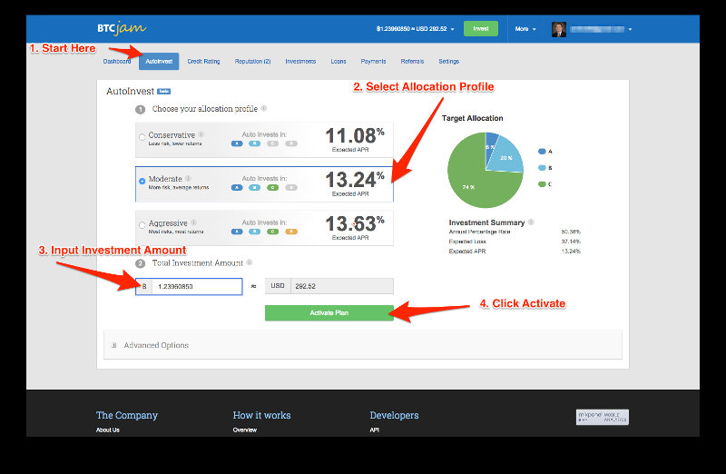
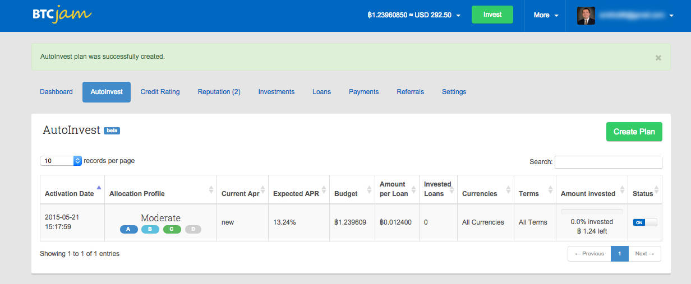

BTCJam AutoInvest
BTCJam is the bitcoin investment I’ve been most excited about. They provide a high rate of return and have been promising AutoInvest since I interviewed their Chief Marketing Officer Flavio Rump last year.
About BTCJam
For those who don’t know BTCJam is a peer-to-peer lending market place. BTCJam is like Uber it connects lenders with borrowers but does not lend it’s own funds.
Welcome BTCJam AutoInvest!
I’ve been waiting for BTCJam auto invest since I began lending on BTCJam in August 2014.
As soon as I saw the AutoInvest announcement I jumped on the chance to try it!
Why I’m Excited?
AutoInvest solves one of the key BTCJam issues: investment passivity.
Investing in BTCJam loans is time consuming. It is important to invest in lots of loans (diversification) and to avoid loans that are too risky.
BTCJam AutoInvest promises to make lending on BTCJam a more passive activity. This is key. How can I sit on a beach watching my son play in the beautiful Caribbean waves if I’ve got to be managing my investments? Passivity is key to retirement :)
It took me one hour from clicking invest to finish to invest 1.2 BTC through BTCJam’s AutoInvest. All but 60 seconds of that time was because I didn’t have 1 BTC available (their minimum investment size) on BTCJam.
Why only 1.2 BTC? I recommend trying new investments with a small amount of bitcoin first. I can always add on to a good investment later if things go well. I had .2 BTC in my account ready to invest, but BTCJam required a minimum investment of 1 BTC.
Here are the 4 investment steps:
- Navigate to the BTCJam AutoInvest tab.
- Select your allocation profile. The more conservative profiles have a lower risk of default, but BTCJam expects an overall higher rate of return for more aggressive portfolios. For my first investment I selected Moderate.
- Specify your investment amount.
- Click Activate
As long as you have over 1 bitcoin in your account to AutoInvest with the whole process will take a minute or two.


7 Weeks later…
The first investment is working out great! My current APY is 14.06%, just over the estimated 13.24% and I’ve spent no time managing this investment. Woohoo!
I learned three things:
- I turned off BTCJam emails. The way AutoInvest works is it spreads your investment over a lot of loans. This means you will get a lot of emails for comments, payments, etc. Initially I set these to daily summaries, then weekly summaries, and then I turned them off altogether.
- I wish I would have selected a shorter investment timeframe (see advanced settings below). The investment I selected filled quickly (I think a few days). I should have been selective about having shorter loan terms (more on that below) so I could cycle my bitcoins more quickly. The faster loans get paid off (and some borrowers pay early), the faster the capital can be re-invested.
- When I invested there was no checkbox to reinvest returns. This is available now. With this new information, maybe point #2 is moot.
Advanced AutoInvest Options
BTCJam gives a great baseline for selecting a risk profile. It then allows you to tweak what investments it will fund.
Here are the options:
- Number of Investments. My feeling on this is the higher the better. You get more diversification.
- Type of Investments. By eliminating types of investments (fiat or bitcoin) this is a crude way to change risk by type of asset and geography.
- Loan Term. The length of the loan
- Reinvest returns. This is an option I would have checked if it had been available when I created my investment plan. I’m going to try it with my next one so my returns can be put right back to work.
If you are lending on BTCJam I highly recommend using AutoInvest. It takes the hassle out of managing your investments. The only time I plan on doing direct loans now that BTCJam has AutoInvest is if one of my friends wants me to fund a loan.
Is AutoInvest Perfect?
No AutoInvest is not perfect. There are two risks I still see: default rates and site security.
- This feature is new. There isn’t a long history to know what the rates of return will be. The current rates seem reasonable and are in line with other peer-to-peer lending sites like Prosper and Lending Club.
- Many bitcoin sites have been hacked. I’m not aware of any security breaches at BTCJam. However I’m also not aware of the funds they hold for lenders being insured. Until the bitcoin industry figures out how to make theft extremely difficult or insurance is widespread it is going to be hard for me to trust bitcoin companies with life changing amounts of money.
Your Thoughts?
What do you think? Are you excited about AutoInvest? Is it safe enough? Are the returns high enough? Let me know in the comments!